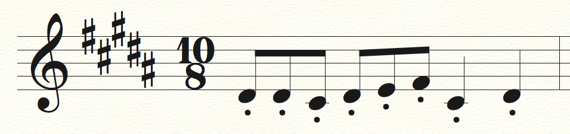
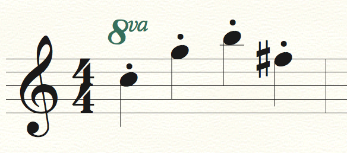
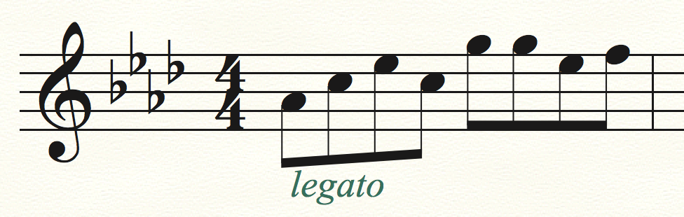
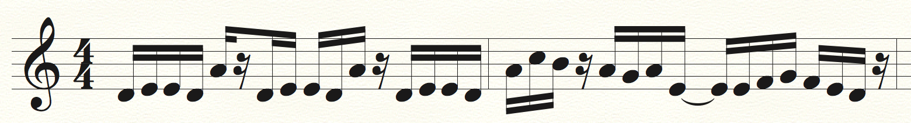
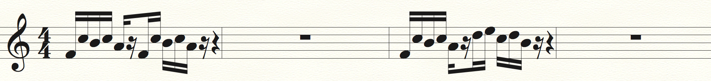

Video Game Music: Ostinato and Repetition
It’s no secret that video game music is repetitive. In fact, a focus on repetition and ostinato is one of the hallmarks of the genre. When I write music with a large degree of repetition, I wonder if I’m just being lazy, trying to get out of writing more parts—or if I’m missing out on some degree of musical sophistication. But at the same time, repetition in music is something I crave; and the hoards of 30 minute looped versions of video game music online tell me that I’m not alone. So let’s talk about why video game music has so much repetition and what that does for the music and the games they come from.
In the era of the Nintendo Entertainment System (NES), hardware limitations forced developers to get creative with small amounts of memory. In particular, there wasn’t much room for long pieces of music in games, so shorter pieces had to be looped. That seems clear enough, but here’s an interesting consequence you may not have immediately expected.
Imagine you’re a composer writing a short piece of video game music that’s going to be looped indefinitely. If the musical idea changes significantly or constantly over the piece’s short duration, players will notice when the piece loops. This is bad for various reasons: it points out how short your music is, it sounds pretty jarring, and (perhaps most importantly) it breaks the player’s immersion into the game; after all, immersion and atmosphere are probably the goals the developers had in mind when they hired you to write music in this scenario. So naturally, you’re going to write music which is self-similar, so it’s not so big a deal if your piece is short or if it loops. That is, your music will feature a fair amount of internal repetition.
Of course, hardware limitations disappear as time goes on, but the culture of the music persists. Repetition had become so integral to the idea of video game music, and people loved the unique sound of it—not to mention the numerous articles and books which discuss why humans tend to prefer highly repetitive music.
What does “repetition” actually mean in the context of video game music? One prevalent form (and definitely my favorite) is called ostinato. Ostinato is repetition of a musical motif, the smallest recognizable form of musical idea.
For example, let’s look at “Night of Fate” (Kingdom Hearts) by Yoko Shimomura. The entire skeleton of this piece of music is the ostinato in the strings. Here is the motif:

The quick rhythm, along with the brevity of the notes (staccato) make this ostinato a driving force underlying the music. “Night of Fate” is a battle theme; it plays during combat sections of the game. The ostinato makes the piece (and hence the battle) feel exciting and fast-paced. There’s also the 10/8 time signature (or 5/4, depending on who you ask), which makes the piece feel off-balance. The latter two compound beats are shorter than the first two, tumbling each measure of music into the next. And since the piece so heavily relies on this uneven ostinato, the disorienting feeling of the rhythm pervades the music (and consequently the game). Narratively, this part of the game (Traverse Town) is supposed to be a moment of confusion for the player, and the music carries the atmosphere very well.
By contrast, the ostinato is completely different in a piece like “Lavender Town” (Pokemon Red/Blue) by Junichi Masuda. Here is the repeated motif:

Like in “Night of Fate,” the ostinato in “Lavender Town” underlies the whole piece. However, the motif is slow in tempo and rhythmically unexciting (no syncopation, just straight quarter notes). In fact, the steady ostinato, like the ticking of a clock, seems to convey a sense of anxiety and tedium, fitting the eerie nature of the in-game town the piece accompanies. Listening to this piece out of context is much harder; the repetition grates on your ears. And it's supposed to.
Ostinato, a seemingly indiscreet musical tool, has subtler uses, as well. For example, take the piece “Forest Interlude” (Donkey Kong Country 2: Diddy’s Kong Quest) by David Wise. The piece starts off with an ostinato, repeating the following motif:

The smooth, legato motif, played by a soft synth, establishes a relaxing ambience at the start of the piece. The repetitive nature only serves to heighten this effect, as the repeated dynamic swells and shifts in timbre feel trance-like. As the melody comes in, the ostinato persists underneath (but softer), creating a bridge to the next section of the music. After the initial statement of the melody, the ostinato is gone, so extending it into the first appearance of the melody is ostensibly just for the purpose of creating a smooth bridge from the introduction to the main theme. In fact, I’d argue that the repetitive nature of the ostinato helps facilitate this transition, since the repetition makes the music feel more ambient and less present. As further evidence, the same ostinato makes a return a bit after the 2:00 mark during another transition point in the piece.
As a final note, ostinato can come in a variety of flavors. Another piece by Yoko Shimomura, “Unfinished Battle” (Xenoblade Chronicles), uses what’s called a rhythmic ostinato, in which the motif persists but only in rhythm. The piece starts off like this:

The strings carry this motif through the first section of the piece, and it drives the piece forward, much like the ostinato in “Night of Fate.” Later on (at 1:23 and more completely at 1:31), the first half of the motif shows up again, and sometimes just the rhythm is preserved:

Notice here how the rhythm is the same as in the original statement of the motif; even the rests (beats of silence) match up, so it feels as if we are listening to the first part of the original ostinato and silencing the rest. Regardless of whether the whole motif is played, we still get the driving feeling of the original motif.
There’s a lot to be said about repetition in video game music, much more than what I’ve said here. It’s a really interesting topic! If you have any thoughts on it, I’d love to hear them.